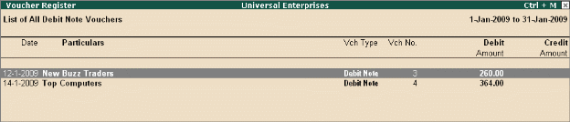

Debit Note Register
To generate Debit Note Register,
Go to Gateway of Tally > Display > Account Books > Journal Register > Debit Note Register
# Press Enter on the required month to view Debit Notes for a month.
